次の日、私は箱根の芦ノ湖へと向かいました。箱根湯本駅から芦ノ湖までの6km以上の道を歩きましたが、新鮮な空気と美しい自然景色がこの旅行を快適で印象深いものにしました。途中、箱根赤津屋で冷たいそばを味わい、静かな雰囲気の中での食事は格別でした。
芦ノ湖に到着した時は、もう夕方でボートを借りる時間がありませんでしたが、夕暮れ時の湖の風景と遠くの壮大な山々がその失望感を補ってくれました。最後に、箱根神社の平和の鳥居で写真を撮るために30分以上待ちましたが、壮大で神聖な風景はその待機時間に見合うものでした。

 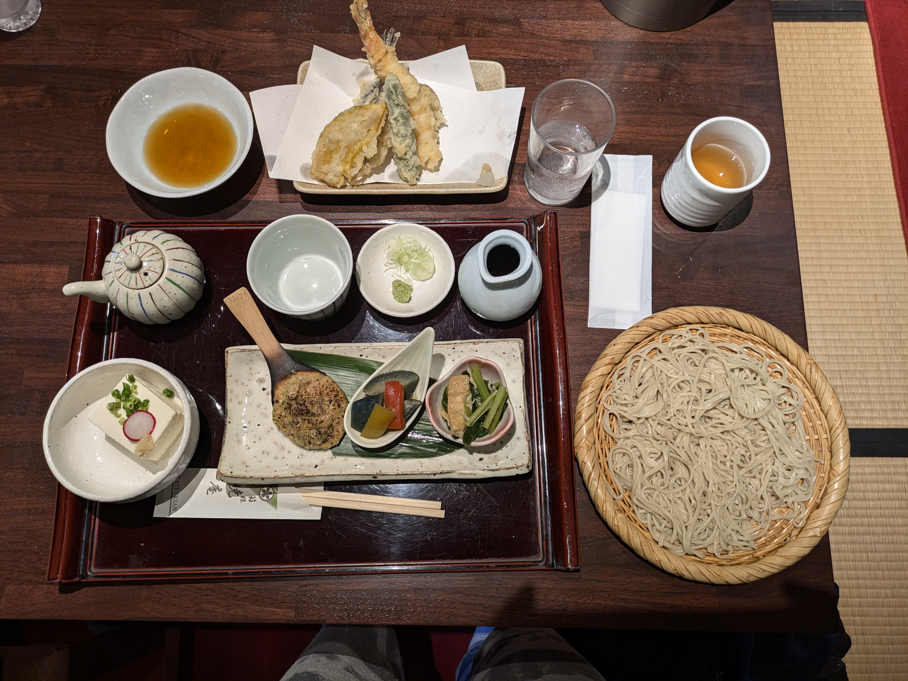
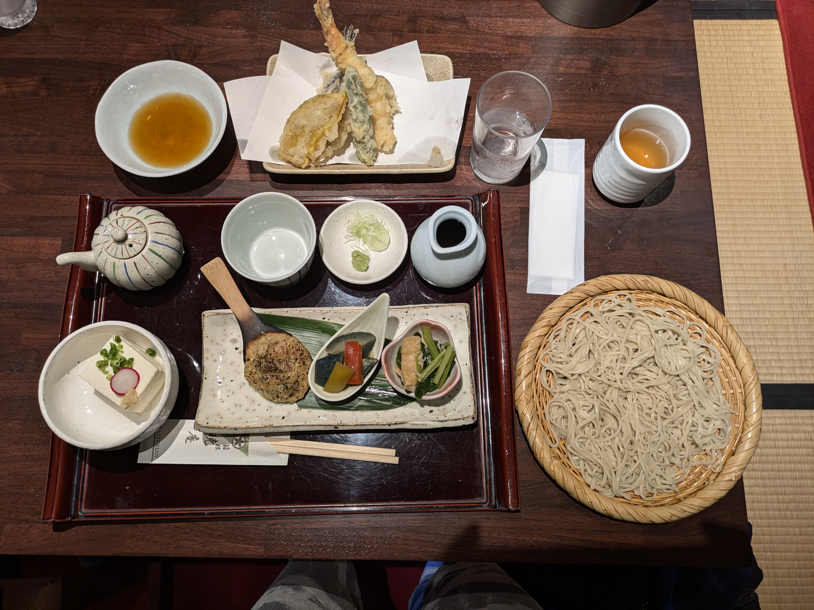
箱根赤津屋での冷たいそばの美味しい食事。

 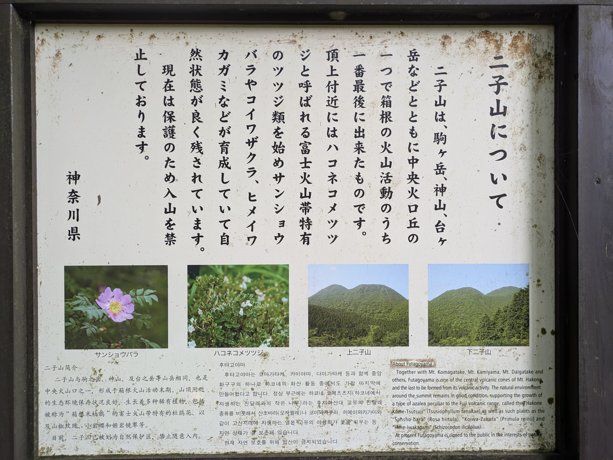
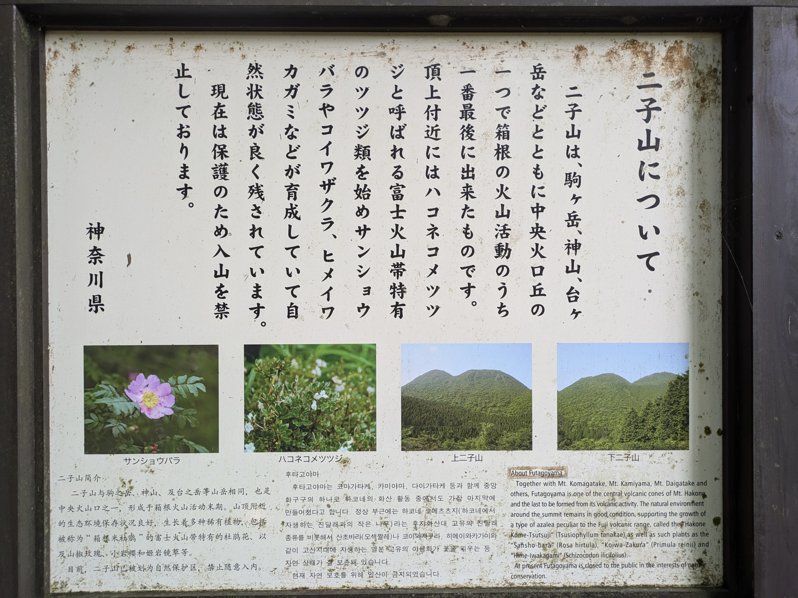
箱根の山々を登りながら、美しい風景を楽しみました。森林の中のトレッキングは心を癒してくれました。
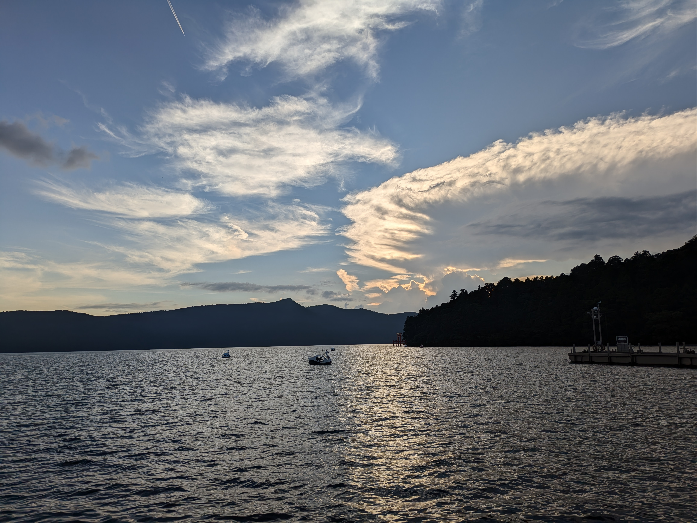
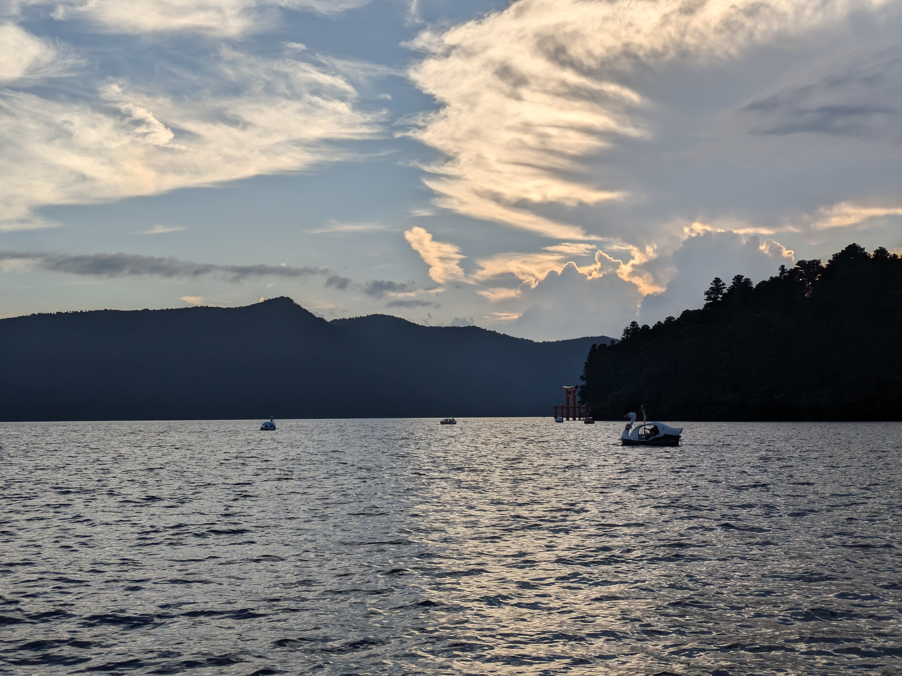
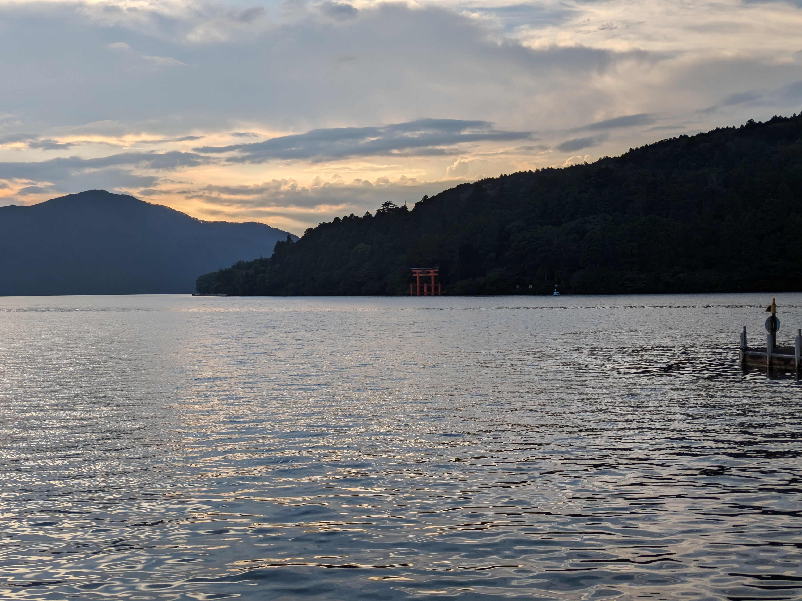
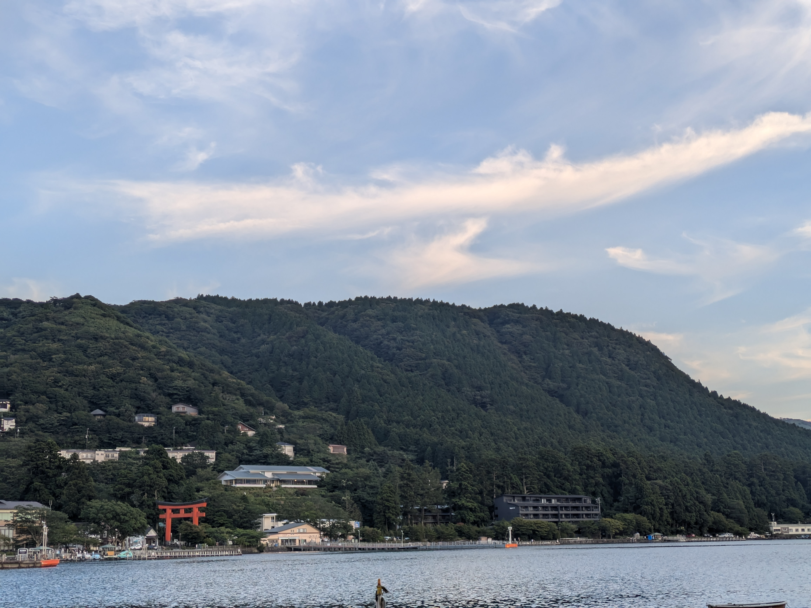
芦ノ湖の美しい夕暮れと壮大な山々の景色。
 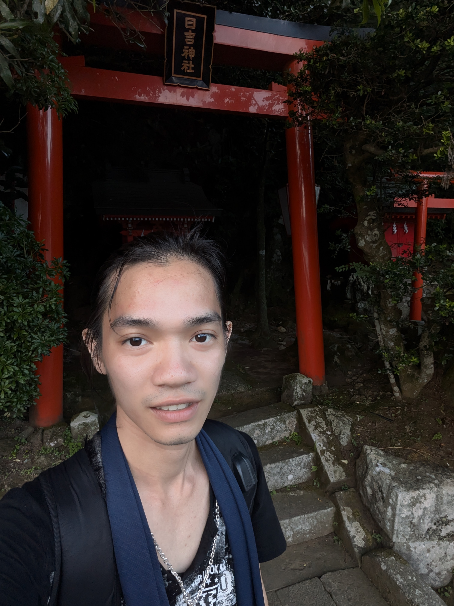
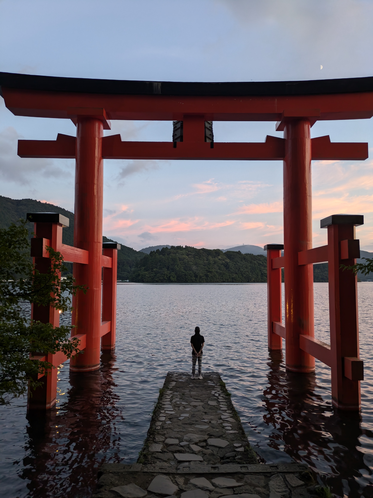
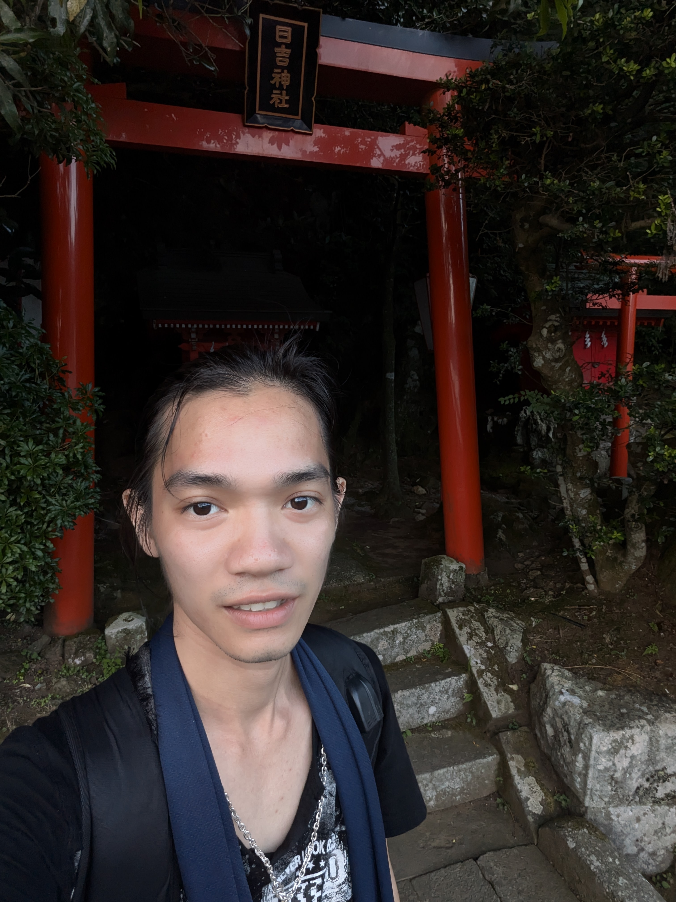
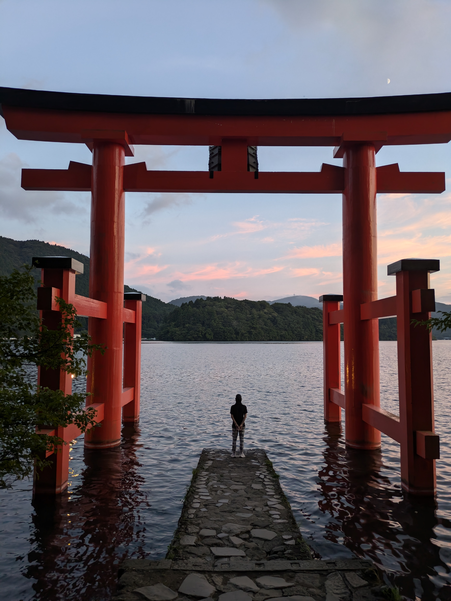
箱根神社の平和の鳥居での壮大な風景。